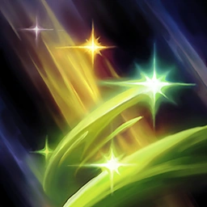

Soraka

Soraka, una nómada proveniente de las dimensiones celestiales más allá del monte Targon, dejó a un lado su inmortalidad para proteger a las razas mortales de sus propios instintos asesinos. Su cometido es difundir las virtudes de la compasión y la misericordia entre todos los seres con los que se cruza, e incluso sanar a aquellos que desean hacerle daño. Pese a los problemas que ha presenciado Soraka hasta la fecha, sigue creyendo firmemente que los pueblos de Runaterra no han alcanzado todo su potencial.
| P | Q | W | E | R |
|---|---|---|---|---|
 |
 | |||
| SALVACIÓN | INVOCACIÓN ESTELAR | INYECCIÓN ASTRAL | EQUINOCCIO | PLEGARIA |
Mejores ADC's con Soraka:
- Ashe
- Jinx
- Kai'Sa
- Ezreal